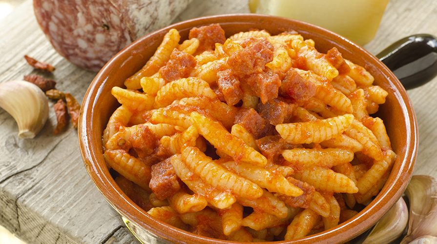

Ricetta Malloreddus alla Campidanese

Descrizione ricetta
Ricetta della tradizione sarda, una pasta di grano duro condita con sugo di pomodoro e carne di manzo
Ingredienti
- 200 gr di Malloreddus
- Sugo di pomodoro fresco
- Parmigiano
Passaggi ricetta
- Cuocere la pasta
- Cuocere il sugo
- Preparare la tavola
- Servire il piatto caldo